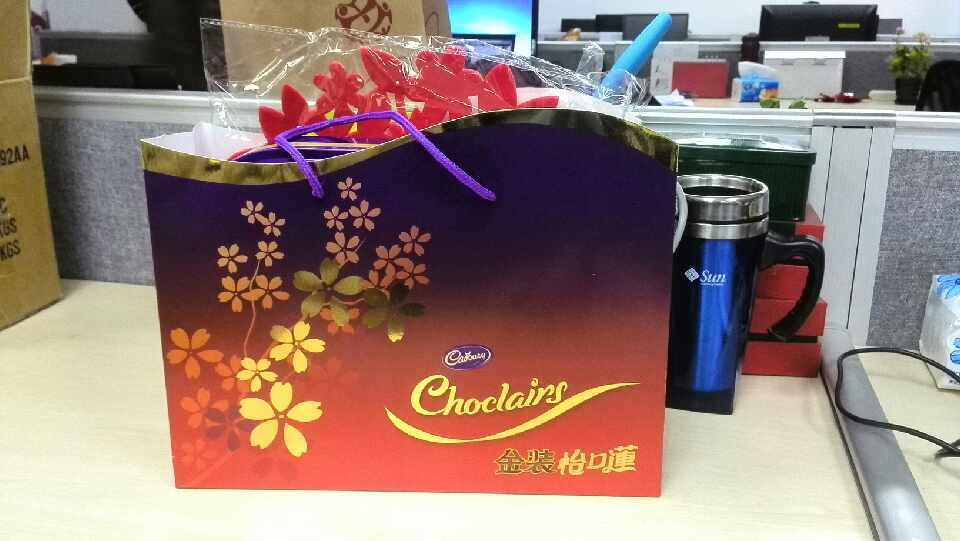

春节就两件正事了：一，给女儿设计和布置个独立房间，之前她住的房间功能混乱，是爸爸的书房，有时还充当客房；二，搞搞PHP编程，当业余爱好吧。

Ada李力
2014-01-29
Ada李力
2014-01-29
PHP是大多数社区产品开发所用的语言，我是看编程语言的适用范围，而做的选择。 //@asmcos_智普教育:看看Python //@葩客: 转发微博
@Ada李力:
春节就两件正事了：一，给女儿设计和布置个独立房间，之前她住的房间功能混乱，是爸爸的书房，有时还充当客房；二，搞搞PHP编程，当业余爱好吧。


Ada李力
2014-01-29
春节前最后一个工作日，办公室里的人已寥寥无几。不过，坚守到下午两点下班时间的，都拿到了礼品-土豪老板个人给大家买的巧克力。[呵呵]
- 